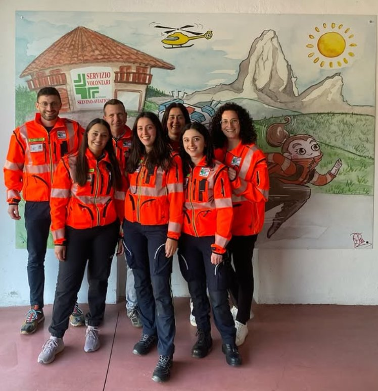
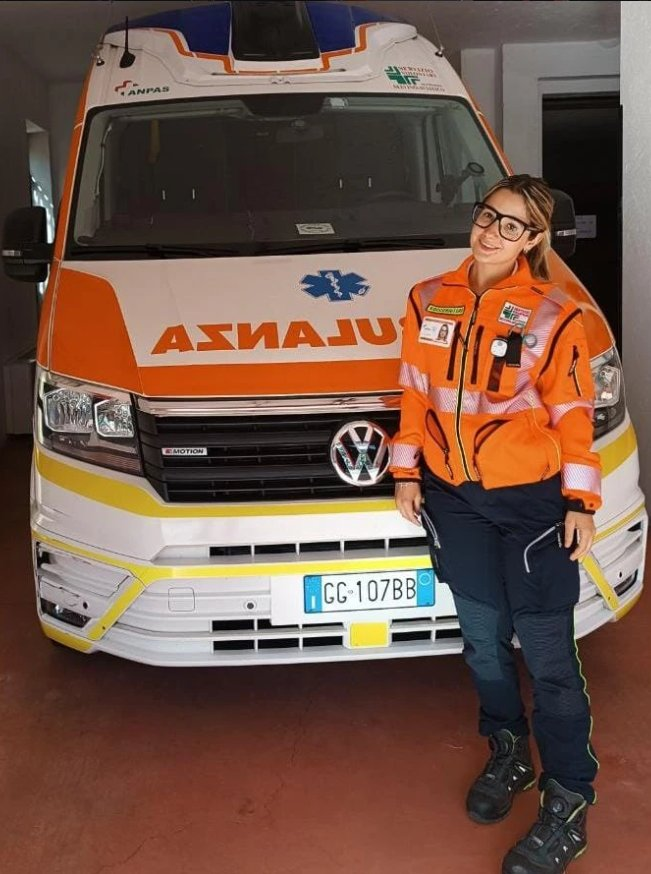

Il Consiglio Direttivo
Il gruppo che guida l'associazione con passione e dedizione al territorio dell'Altipiano.

Servizio Volontario dell'Altipiano Selvino-Aviatico
Siamo un'organizzazione laica di volontari che ogni giorno costruisce una società più sicura e solidale sull'Altipiano Selvino-Aviatico, garantendo soccorso in emergenza, trasporto sanitario e assistenza alla comunità — 24 ore su 24, 365 giorni l'anno.
Un territorio dove ogni persona, in qualsiasi momento e in qualsiasi condizione, possa contare su un soccorso qualificato, tempestivo e profondamente umano. Crediamo nel valore del volontariato come motore di coesione sociale e come risposta concreta ai bisogni della comunità.
I principi che guidano ogni nostro intervento e ogni decisione associativa.
Ogni paziente è una persona. Portiamo cura, rispetto e attenzione in ogni intervento.
Tutti i nostri volontari sono certificati AREU e ANPAS, con formazione continua e aggiornata.
Il volontariato è un dono libero. Operiamo senza fini di lucro, per il bene comune.
Conosciamo il territorio. Siamo parte della comunità che serviamo da oltre 55 anni.
L'Associazione Ambulanza Selvino-Aviatico è presente sul territorio da oltre 55 anni, svolgendo attività di soccorso Emergenza-Urgenza e trasporto persone che necessitano supporto. Le attività dell'Associazione sono rese possibili grazie al prezioso contributo di circa 70 Volontari.
Nata nel 1993 come associazione indipendente – con radici che risalgono al 1964 attraverso la sezione AVIS locale – siamo cresciuti fino a diventare un punto di riferimento fondamentale per la salute e la sicurezza dell'intera comunità dell'Altipiano.
Dal 1995 siamo parte di ANPAS Lombardia, la rete delle associazioni pubbliche di soccorso, e dal 2021 abbiamo stipulato una convenzione continuativa H24 con AREU (Agenzia Regionale Emergenza Urgenza), con sede operativa in Via Monte Alben 19, Selvino.
Oggi disponiamo di tre ambulanze operative e un team di quattro dipendenti affiancati dai nostri volontari. Effettuiamo circa 450-500 interventi di soccorso all'anno e offriamo anche visite settimanali agli anziani fragili del territorio. In collaborazione con l'associazione NoixLoro, gestiamo inoltre un mezzo dedicato al trasporto di persone fragili sul territorio.
Il gruppo che guida l'associazione con passione e dedizione al territorio dell'Altipiano.
Un'opportunità unica per i giovani di crescere, imparare e fare la differenza nella propria comunità.


Presenti sul territorio con passione: eventi, sagre e manifestazioni dell'Altipiano Selvino-Aviatico.

Oltre cinquant'anni di impegno, crescita e dedizione al servizio della comunità dell'Altipiano Selvino-Aviatico.
Primo prelievo collettivo di sangue AVIS a Selvino. Nasce il seme del volontariato locale organizzato.
Fondazione della sezione AVIS locale con 80 soci fondatori. Il volontariato sanitario si struttura sul territorio.
Acquisto della prima ambulanza Fiat 238, inaugurata il 10 ottobre 1968. Nasce ufficialmente il servizio di soccorso dell'Altipiano.
Sostituzione del mezzo con una Fiat Ducato più moderna e attrezzata. Il servizio cresce e si aggiorna.
Fondazione dell'"Associazione Volontari dell'Altipiano Selvino-Aviatico", entità autonoma e indipendente dall'AVIS.
Ingresso in ANPAS Lombardia. L'associazione entra nella rete nazionale delle associazioni pubbliche di soccorso.
Acquisto della terza ambulanza Fiat Ducato. Capacità di servizio ampliata per rispondere alla crescente domanda.
Quarta ambulanza in dotazione. L'associazione consolida la propria presenza sul territorio con mezzi moderni.
Lancio dei Volontari in Vacanza: soccorritori ospitati gratuitamente con le famiglie in cambio di un turno al giorno. Attivazione del centralino cloud.
Quinta ambulanza: l'associazione raggiunge la doppia disponibilità, garantendo due mezzi operativi contemporaneamente.
Prima ondata Covid-19. A marzo 2020 gli interventi aumentano di 3,5 volte rispetto alla media. I volontari rispondono con dedizione straordinaria.
Convenzione continuativa H24 con AREU. Assunzione delle prime 4 dipendenti. Inaugurazione della nuova sede in Via Monte Alben 19. Sesta ambulanza in dotazione.
Circa 450-500 interventi/anno. Avvio delle visite settimanali agli anziani fragili del territorio, ampliando il servizio oltre l'emergenza.
55° anniversario dalla prima ambulanza. Adesione al Servizio Civile Universale. Avvio della collaborazione con l'associazione NoixLoro per il trasporto di persone fragili con mezzo dedicato.
Acquisto della settima ambulanza. Il parco mezzi si rinnova per garantire il massimo affidabilità e sicurezza nel servizio di soccorso.
La comunità di Selvino insieme per celebrare la nuova ambulanza e 58 anni di servizio.
Immagini dei nostri volontari, dei nostri mezzi e delle attività sul territorio.